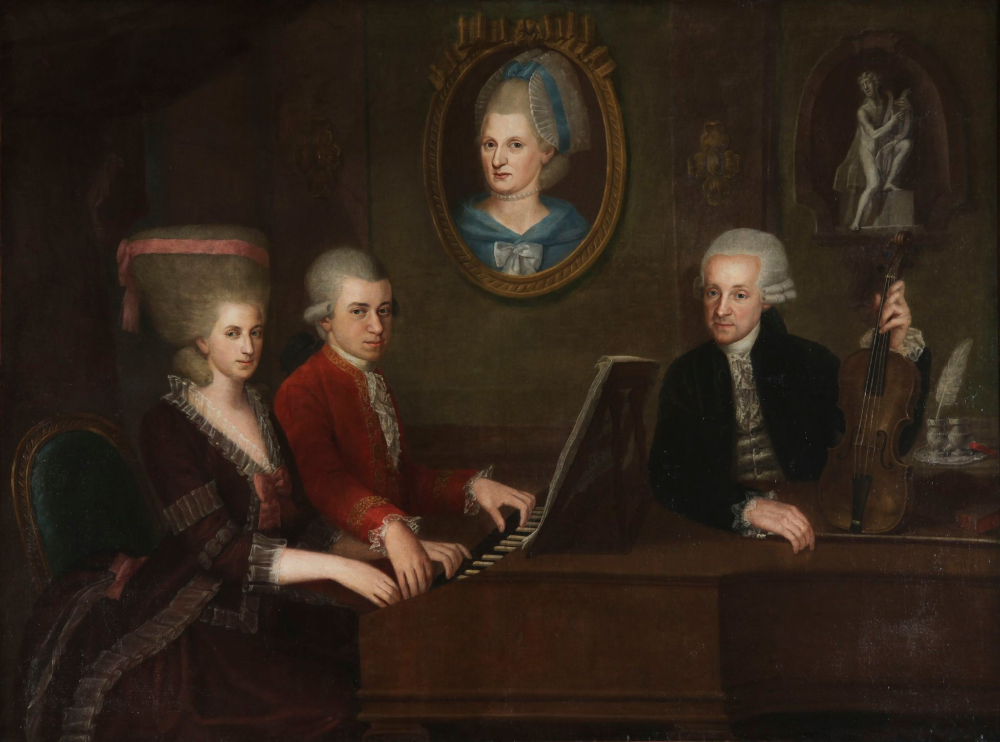
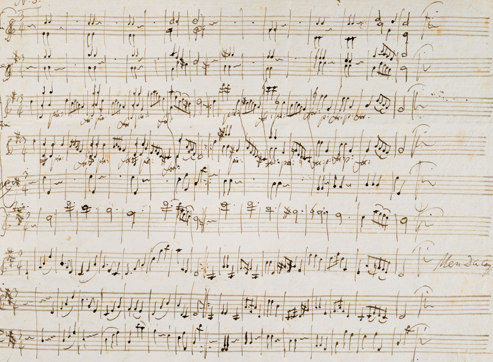

Sobre Mozart:
Wolfgang Amadeus Mozart nasceu em 27 de janeiro de 1756, em Salzburgo, Áustria. Desde muito cedo demonstrou um talento extraordinário para a música, começando a compor aos 5 anos e a se apresentar para a realeza ainda criança. Seu pai, Leopold Mozart, também músico, percebeu o prodígio do filho e passou a levá-lo em turnês pela Europa.
Durante suas viagens, Mozart impressionou reis, rainhas e nobres com sua habilidade de tocar cravo, violino e improvisar composições na hora. Essas experiências moldaram seu estilo e o colocaram em contato com diferentes tradições musicais, o que enriqueceu suas obras.
Mozart se casou em 1782 com Constanze Weber, com quem teve seis filhos, embora apenas dois sobrevivessem à infância. Era profundamente religioso, católico praticante, e muitas de suas obras têm forte inspiração espiritual. Alguns estudiosos também mencionam sua ligação com a Maçonaria, que influenciou peças como A Flauta Mágica.
Ao longo de sua vida, Mozart escreveu mais de 600 peças, incluindo sinfonias, concertos, óperas e música de câmara. Seu trabalho ajudou a consolidar o período clássico, com composições que equilibram emoção e perfeição técnica. Mesmo após sua morte prematura aos 35 anos, sua música continua sendo um dos pilares da música erudita.
Linha do tempo:
- 1756: Nasce em Salzburgo, Áustria.
- 1761: Primeira composição aos 5 anos.
- 1773: Torna-se compositor da corte em Salzburgo.
- 1781: Muda-se para Viena, começa sua fase mais produtiva.
- 1791: Falecimento e início do mito em torno de sua obra.
Obras famosas:
- Eine kleine Nachtmusik (Pequena Serenata Noturna)
- Sinfonia nº 40
- Rondo Alla Turca (Marcha Turca)
- Concerto para Piano nº 21
- A Flauta Mágica (ópera)
- Requiem (obra inacabada)
Escute:
Eine kleine Nachtmusik (Pequena Serenata Noturna):
Rondo Alla Turca (Marcha Turca):
Curiosidades:
- Mozart escrevia música de cabeça sem rascunho, direto para a partitura final
- Adorava piadas e trocadilhos, e suas cartas pessoais mostram que tinha um humor espirituoso e até mesmo "escatológico"
- Ele tinha uma habilidade rara:Ouvido Absoluto.Ou seja, ele conseguia reconhecer qualquer nota musical só de ouvir, sem precisar de nenhum instrumento para conferir.
Galeria:
 Mozart tocando cravo junto com sua irmã, com o pai observando e um retrato da mãe ao fundo. Retrato de Mozart aos treze anos.
Retrato de Mozart aos treze anos.
 Manuscrito de uma de suas obras.